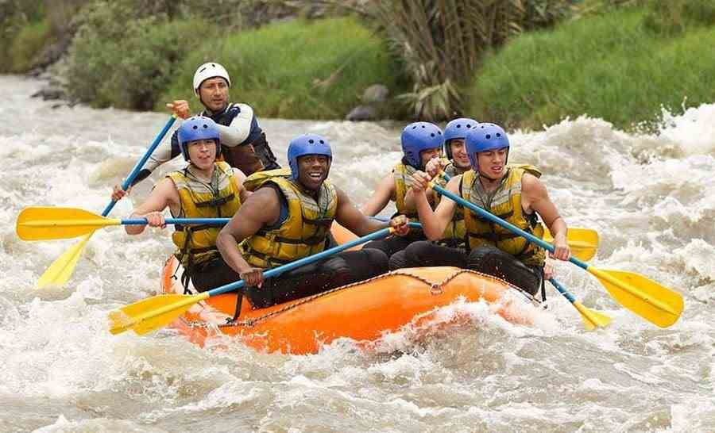

Guiados pelo lema "Desbravando corredeiras, criando lendas", nosso objetivo é proporcionar experiências autênticas que conectam pessoas à força dos rios por meio da superação e do trabalho em equipe. Nossa missão é conduzir cada remada com excelência técnica, equipamentos certificados e profundo respeito ambiental.